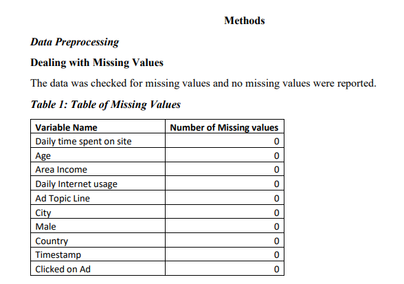
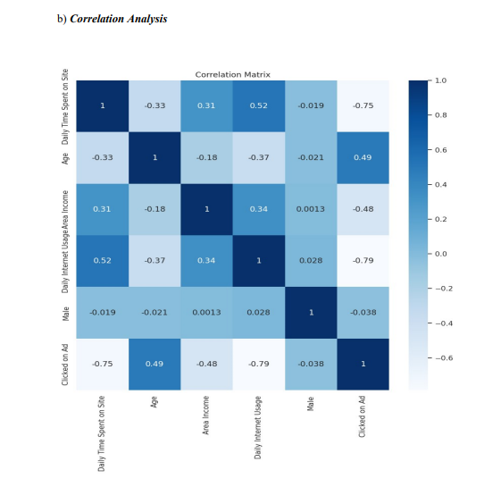

<!DOCTYPE HTML>
<!--
	Strata by HTML5 UP
	html5up.net | @ajlkn
	Free for personal and commercial use under the CCA 3.0 license (html5up.net/license)
-->
<html>

<head>
	<title> Analya Ramirez portfolio website </title>
	<meta charset="utf-8" />
	<meta name="viewport" content="width=device-width, initial-scale=1, user-scalable=no" />
	<link rel="stylesheet" href="assets/css/main.css" />
</head>

<!-- Google tag (gtag.js) -->
<script async src="https://www.googletagmanager.com/gtag/js?id=G-D125QPSGD5"></script>
<script>
	window.dataLayer = window.dataLayer || [];
	function gtag() { dataLayer.push(arguments); }
	gtag('js', new Date());

	gtag('config', 'G-D125QPSGD5');
</script>


<body class="is-preload">

	<!-- Header -->
	<header id="header">
		<div class="inner">
			<a href="images/fulls/profile.jpeg" class="image avatar"></a>
			<h1><strong>Analya Ramirez</strong></h1>
			<P> I am passionate about delivering decision-making support grounded in data, utilizing statistical
				modeling, machine learning, and data mining algorithms to drive informed choices.</P>
			<!-- <h1 style="font-size: 2px;"></h1><a href="https://www.linkedin.com/in/isaac-dada-24ba6ab3/">@IsaacDada</a> -->
		</div>
	</header>

	<!-- Main -->
	<div id="main">

		<!-- One -->
		<section id="one">
			<header class="major">
				<h1 style="font-size: 24px;">Improving Advertising Return on Investment (ROI) through Data Analysis: A
					Study on
					Ad Click Prediction </h1>
			</header>
			<article class="col-6 col-12-xsmall work-item">
				<h2><strong>Business Problem
					</strong></h2>
				<h4>Online advertising is crucial for reaching target audiences and promoting business growth
					in the current digital era (Bharadkar et al., 2021). Advertisers invest significant resources in
					developing and distributing advertisements, and it is crucial to comprehend which
					advertisements are effective at generating user engagement. This project's primary business
					challenge is to predict whether a user will click on an ad (Yes or No) based on various factors,
					such as demographic data, online behavior, and ad-specific details. The insights obtained from
					this prediction will assist advertisers in optimizing their advertising strategies and allocating
					resources more effectively.</h4>
				<br>
				<h2><strong>Datasets</strong></h2>
				<h4>The dataset, named "advertising.csv," from Kaggle comprises a thorough compilation of
					data related to individuals who participated in a survey. The dataset includes a variety of factors,
					including demographic data, online behavior, and ad-specific. The dataset consists of 1000
					observations with 10 variables.
					Data Description
				</h4>
				<h2><strong>Daily.Time.Spent.on.Site:</strong></h2>
				<h4>The amount of time a user spends on the website (numeric).</h4>
				<h2><strong>Age: </strong></h2>
				<h4>The age of the user (integer).</h4>
				<h2><strong>Area.Income: </strong></h2>
				<h4> The user's annual income in their geographical area (numeric).</h4>
				<h2><strong>Daily.Internet.Usage:</strong></h2>
				<h4> The amount of time a user spends on the internet daily (numeric).</h4>
				<h2><strong>City:</strong></h2>
				<h4> The city where the user is located (character).</h4>

				<h2><strong>Male:</strong></h2>
				<h4> Gender of the user (0 for female, 1 for male; integer).</h4>

				<h2><strong>Country:</strong></h2>
				<h4> The user's country (character).</h4>


				<h2><strong>Timestamp:</strong></h2>
				<h4> The timestamp when the user interacted with the ad (character).</h4>

				<h2><strong>Clicked.on.Ad: </strong></h2>
				<h4> The target variable to be predicted (0 for No, 1 for Yes; integer).
				</h4>

				<h2><strong>Research Question
					</strong></h2>
				<h4>
					What factors influence a user's decision to click on an advertisement, and can we accurately
					forecast ad clicks using these factors? </h4>
				
				<br>


				<h2><strong>The process of encoding categorical variables

					</strong></h2>
				<h4> Categorical variables are of considerable importance in the analysis of socioeconomic
					data. In order to render them compatible with machine learning techniques, we employed the
					technique of one-hot encoding. This methodology transforms categorical variables into a
					numerical representation by generating binary columns for each category. By employing this
					approach, the categorical data's integrity is retained while ensuring its compliance with the
					prediction models </h4>
				<br>

				<h2><strong> Standardization/Normalization </strong></h2>
				<h4> The numerical features present in the dataset underwent either standardization or
					normalization. The standardization process guarantees that numerical qualities possess a mean
					value of zero and a standard deviation of one. On the other hand, normalization involves scaling
					numbers to a predetermined range, such as the interval [0, 1]. Ensuring fair comparisons of
					numerical features is of utmost importance, as it prevents traits with greater scales from exerting
					undue influence over the modeling process.

				</h4>


				<h2><strong> Model Construction
						<br>
						The investigation of algorithms
					</strong></h2>
				<h4> This project's scope encompassed an examination of many machine learning algorithms
					to determine the optimal model for forecasting the likelihood of clicking an ad. The algorithms
					under consideration were:
					<br>
					1) Logistic Regression is a fundamental (Cokluk, 2010) linear model commonly
					employed for binary classification applications.
					<br>
					2) Random Forests, a versatile (Cornelius & Shanthini, 2023) ensemble method, can
					effectively capture intricate correlations within the dataset.
					<br>
					3) Decision Tree which make decisions by recursively splitting the data based on the most
					informative features, aiming to maximize information gain or minimize impurity.
					<br>
					4) KNN, an algorithm that classifies or predicts a data point by considering the class labels
					of its k-nearest neighbors in the feature space.
					The investigation of various algorithms facilitated the identification of the model that
					exhibited the highest level of performance in terms of predictive accuracy, precision, recall, and
					F1-score
				</h4>
				<br>
				<h2><strong> Parameter Tuning </strong></h2>
				<h4> Parameter tuning, referred to as hyperparameter tuning, entails the systematic selection of
					optimal hyperparameters for a machine learning algorithm. Hyperparameters refer to
					predetermined settings not derived from the data but established before the training process.
					These settings possess the potential to (Zaki et al., 2021) exert a substantial influence on the
					model's performance. The parameter tuning process entails systematically exploring various
					combinations of hyperparameters and assessing the model's performance using cross-validation.
					The objective is to identify the hyperparameters that yield optimal model performance on
					the validation dataset
				</h4>

				<h2><strong>Feature Selection </strong></h2>
				<h4> Selecting relevant features from a given dataset is called feature selection. The process of
					feature selection holds significant importance in the study. In order to ascertain the
					characteristics that substantially contribute to the model's predictive capability, we employed
					feature importance scores. The scores provide valuable insights into the relative impact of
					different characteristics on the model's output. Features that possess greater significance scores
					were deemed to be more pertinent in the prediction of whether a user will click on an ad (Yes or
					No).
				</h4>

				<h2><strong>Selecting Relevant Features
					</strong></h2>
				<h4>Identifying key characteristics is a crucial task, and it is equally imperative to carefully
					choose a subset of features that optimizes predicted accuracy while limiting the potential for
					introducing bias. Five best features were selected from the dataset using this method
				</h4>

				
				<br>
				<h2><strong>Feature Importance
					</strong></h2>
				<h4>Feature importance is frequently employed in machine learning to ascertain the
					individual contributions or levels of significance of features (also known as variables or
					attributes) within a prediction model. Understanding the features that exert the most influence on
					the predictions made by the model is beneficial. Age, daily time spent on site, daily internet
					usage and area income are the (see Appendix A) most important features in predicting clicking
					ad.
				</h4>

				<h2><strong>Model Evaluation
					</strong></h2>
				<h4>In order to appropriately evaluate the performance of our models, the dataset was divided
					into two distinct subsets: a training set and a testing set. The training set was utilized to train
					the
					model, while the testing set was set aside to evaluate its performance on data that had not been
					previously encountered (Vrigazova, 2021). This methodology enables us to assess the model's
					capacity to extrapolate to novel instances.
					<br>
					Performance metrics are quantitative measures used to evaluate and assess the
					performance of a system, process, or individual. These metrics provide objective data. The
					models were assessed using a variety of performance indicators, which encompassed:
					<br>
					1) Accuracy refers to measuring accurately anticipated cases about the total number
					of cases.
					<br>
					2) Precision refers to the capacity to categorize instances as positive examples
					accurately.
					<br>
					3) Recall refers to the cognitive capacity to accurately identify and retrieve all
					pertinent cases or instances relevant to a certain context or situation.
					<br>
					4) The F1-score is a metric that quantifies the balance between precision and recall
					by calculating their harmonic mean.
					<br>
					The metrics thoroughly evaluate the models' predictive capacities, allowing us to make
					educated judgments regarding their appropriateness for our depression prediction task.
				</h4>
				
				<br>
				
				<br>

				<h4>Positive values (greater than 0) indicate a positive correlation between the variables. This
					means that as one variable increases, the other tends to increase as well. For example, "Daily
					Time Spent on Site" and "Daily Internet Usage" have a positive correlation of approximately
					0.52, suggesting that as daily time spent on the site increases, daily internet usage also tends to
					increase.
					<br>
					Negative values (less than 0) indicate a negative correlation between the variables. This
					means that as one variable increases, the other tends to decrease. For instance, "Area Income"
					and "Clicked on Ad" have a negative correlation of approximately -0.48, indicating that high
					income earners are less likely to click on ads in this dataset.
				</h4>
				<h2><strong>Daily Time Spent on Site vs. Clicked on Ad (-0.75):
					</strong></h2>
				<h4>This correlation is quite strong and negative, indicating a significant inverse relationship.
					People who spend more time on the site are less likely to click on ads.
				</h4>
				<h2><strong>Age vs. Clicked on Ad (0.49):
					</strong></h2>
				<h4>This is a positive correlation, though not extremely strong.
					Generally, as the age of users increases, they are more likely to click on ads
				</h4>
				<h2><strong>Area Income vs. Clicked on Ad (-0.48):
					</strong></h2>
				<h4>There is a moderate negative correlation.
					Users with higher area income are less likely to click on ads
				</h4>

				<h2><strong>Daily Internet Usage vs. Clicked on Ad (-0.79):
					</strong></h2>
				<h4>This is a strong negative correlation.
					Users who spend more time on the internet are less likely to click on ads.
				</h4>

				<h2><strong>Male vs. Clicked on Ad (-0.038):
					</strong></h2>
				<h4>There is a very weak negative correlation.
					Being male or female doesn't strongly influence the likelihood of clicking on ads
				</h4>

				
				<br>
				
				<br>
				
				<br>
				
				<br>

				
				<br>
				
				<br>
				
				<br>
				
				<br>
				<h4>Based on these metrics:
					Logistic Regression has the highest accuracy and precision, making it the top performer
					in terms of classifying the positive class ("Clicked on Ad"). It also has a strong F1 score and
					recall.
					<br>
					Random Forest is also strong, with high recall and an overall balanced performance. It
					performs slightly lower than logistic regression in precision.
					K-Nearest Neighbors (KNN) has high precision and accuracy, but its recall is lower. This
					means it's good at correctly classifying positive cases but may miss some of them.
					Decision Tree performs similarly to Random Forest in this case, with balanced
					performance across all metrics
				</h4>
				<h2><strong>Conclusion
					</strong></h2>
				<h4>The research conducted an in-depth analysis of the performance of four machine learning
					models: Logistic Regression, Random Forest, K-Nearest Neighbors (KNN), and Decision Tree,
					within the context of predicting online advertisement clicks. The study's goal was to assess their
					efficacy based on demographic and behavioral features of users.
					<br>
					The findings revealed distinct strengths and areas of improvement for each model,
					offering valuable insights for practical application.
					<br>
					**Logistic Regression** exhibited outstanding performance, particularly in terms of
					precision and accuracy. It excelled in correctly identifying users likely to click on ads, making it
					a strong choice for applications where reducing false positives is essential.
					<br>
					**Random Forest** demonstrated a balanced performance, with a high recall rate and
					competitive F1 score. Its ensemble-based approach displayed robustness in handling diverse data
					patterns, making it a versatile choice suitable for scenarios requiring adaptability.
					**K-Nearest Neighbors (KNN)** excelled in precision and accuracy, although its recall
					rate was comparatively lower, potentially leading to missed opportunities to identify users who
					would click on ads. KNN may be favored when precision is paramount, and the cost of false
					positives is significant.
					<br>
					**Decision Tree**, while not topping any specific metric, showcased balanced
					performance across all evaluation criteria. Its simplicity and interpretability rendered it a
					pragmatic choice, especially when model transparency and ease of comprehension are priorities.
					It is important to recognize that model selection should be guided by the specific goals
					and constraints of the application. Considerations such as computational efficiency,
					interpretability, and the relative importance of different performance metrics should inform the
					model selection process.
					<br>
					Additionally, it is crucial to emphasize that the model's effectiveness was evaluated based
					on the dataset and features employed in this research. Real-world applications may necessitate
					further feature engineering and parameter tuning to optimize model performance. Regular model
					evaluation and adaptation are vital for sustaining effectiveness in practical use cases.
					In conclusion, the outcomes of this research offer valuable insights into the performance
					of diverse machine learning models for online advertisement click prediction. By comprehending
					the strengths and weaknesses of these models, practitioners can make informed decisions when
					selecting the most suitable model for their specific application, ultimately enhancing the
					efficiency and effectiveness of their marketing campaigns
				</h4>

				<h2><strong>Assumptions
					</strong></h2>
				<h4>During the course of constructing and evaluating our prediction models, a number of
					assumptions were made.
					<br>
					1) The dataset presented exhibits characteristics that are indicative of the larger
					population, and the survey data collected is deemed to be precise and dependable.
					<br>
					2) The features employed for the purpose of prediction are pertinent to the
					discernment of depression.
					<br>
					3) The partitioning of the data into training and testing sets was conducted in a
					random manner, adhering to established guidelines for evaluating machine learning models.
					<br>
					4) The fairness criteria employed for bias evaluation successfully capture potential
					biases inherent in the model predictions
				</h4>

				<h2><strong>Limitations
					</strong></h2>
				<h4>The present study also possesses certain limitations:
					<br>
					1) It is possible that the dataset may not comprehensively encompass all pertinent
					aspects that contribute to the development of depression, and the inclusion of further variables
					has the potential to improve the efficacy of the model.
					<br>
					2) The potential limitation of the models' generalizability to larger populations may
					arise from the quantity of the dataset.
					<br>
					3) The issues encountered in our study were to the metrics of precision and recall,
					suggesting that our models may not now possess the requisite level of suitability for making
					crucial decisions in a clinical environment within the real world
				</h4>

				<h2><strong>Challenges
					</strong></h2>
				<h4>Potential issues that may arise in the course of this project include:
					<br>
					i. Dealing with unbalanced data if there are substantially more instances of one class
					than the other (e.g., more "No" than "Yes" clicks).
					<br>
					ii. Effectively managing and processing timestamp data.
					<br>
					iii. Reducing bias in datasets and model predictions.
					<br>
					Considerations of ethics regarding data privacy and consent.
				</h4>

				<h2><strong>Future uses/Additional Applications
					</strong></h2>
				<h4>There is need for additional refinement to enhance their applicability across a wider range
					of contexts.
					<br>
					1) Personalized interventions involve the customization of therapies to align with the
					unique risk profiles of individuals.
					<br>
					2) Population-level analysis involves the expansion of our existing models to
					examine the patterns and trends of depression within broader populations.
					<br>
					3) The integration of real-time data into various systems and processes has become
					increasingly prevalent in contemporary society. Leveraging contemporary data sources to
					enhance predictive capabilities
				</h4>

				<h2><strong>Recommendations
					</strong></h2>
				<h4>The following recommendations are suggested for this analysis:
					<br>
					1) Examine supplementary functionalities: To improve the effectiveness of the
					model, it is recommended to incorporate supplementary socio-economic and psychological
					variables.
					<br>
					2) Conduct a comprehensive examination of sophisticated algorithms. Conducting
					experiments with advanced machine learning techniques in order to enhance the accuracy of
					predictions.
					<br>
					3) Perform external validation: It is imperative to assess the generalizability of our
					models by subjecting them to validation on diverse datasets.
					<br>
					4) Engage in collaborative efforts with mental health professionals: It is advisable to
					enlist the expertise of professionals in order to obtain specialized knowledge and enhance the
					comprehensibility of the model.

				</h4>


				<h2><strong>Implementation plan
					</strong></h2>
				<h4>To implement the following recommendations, the following plan is proposed:
					<br>
					1) Data augmentation: Procure and incorporate supplementary data sources that are
					pertinent, hence broadening the range of features.
					<br>
					2) The objective of this study is to conduct algorithm experimentation in the field of
					machine learning, specifically focusing on advanced algorithms such as gradient boosting and
					neural networks. The primary aim is to optimize the performance of these algorithms by finetuning
					their hyper parameters.
					<br>
					3) External validation involves the process of validating models using datasets that
					are external to the ones used for model development. This approach allows for the assessment of
					model performance in various demographic and cultural situations.
					<br>
					4) Collaboration entails engaging with mental health practitioners and researchers in
					order to acquire valuable insights pertaining to the field and enhance the therapeutic applicability
					of our models.


				</h4>

				<h2><strong>Ethical Considerations
						<br>
						Privacy and Confidentiality
					</strong></h2>
				<h4>The dataset will only be utilized for research objectives and will not be disclosed to
					external entities. To safeguard the identities of the respondents, the data will undergo
					anonymization. The process will entail eliminating any personally identifiable information (PII)
					from the dataset, including but not limited to names, addresses, and contact details
				</h4>

				<h2><strong>Transparency
					</strong></h2>
				<h4>In order to ensure transparency, it is imperative to thoroughly document the data sources,
					preprocessing stages, and model choices employed in the analysis. This documentation serves to
					provide a comprehensive record of the information utilized, the methods applied to prepare the
					data, and the specific models selected for the analysis. By maintaining this level of transparency,
					researchers and stakeholders may better understand the decisions made throughout the process
					and assess the validity and reliability of the results.
				</h4>
				<h2><strong>The process of mitigating bias
					</strong></h2>
				<h4>Evaluating and mitigating potential biases in the data or models will be conducted. This
					will be accomplished by the utilization of a diverse range of methodologies, including:
					<br>
					i. Data cleaning encompasses the process of discovering and eliminating mistakes
					or inconsistencies present within the dataset.
					<br>
					ii. Feature selection is a crucial step in data analysis, as it entails carefully selecting a
					subset of features pertinent to the specific task at hand. The objective of feature selection is to
					identify and retain only those relevant elements while ensuring that the selected features do not
					introduce bias into the analysis.
					<br>
					iii. The model evaluation process encompasses the assessment of biases within the
					models through the utilization of methodologies such as fairness metrics and discrepancy
					analysis.
				</h4>

				<h2><strong>Informed Consent
					</strong></h2>
				<h4>Before collecting their data, the researchers will ensure that the survey participants have
					consented. The goal of the study, the data collection process, and the data utilization will be
					communicated to the participants. The participants will also have the option to revoke their
					consent at any time
				</h4>


				<h2><strong>References
					</strong></h2>
				<h4>Goyal, A., Bhong, S., Kumbhare, P., & Bharadkar, R. (2021). The new era of digital marketing: 
					a literature review. PalArch's Journal of Archaeology of Egypt/Egyptology, 18(10), 728-
					741.
					<br>
					Cokluk, O. (2010). Logistic Regression: Concept and Application. Educational Sciences: Theory 
					and Practice, 10(3), 1397-1407.
					<br>
					Cornelius, K., & Shanthini, B. (2023). Air Quality Data Analysis and Prediction Using Modified 
					Differential Evolution-Random Forest Algorithm. Journal of Survey in Fisheries 
					Sciences, pp. 3067–3078.
					<br>
					Elgeldawi, E., Sayed, A., Galal, A. R., & Zaki, A. M. (2021, November). Hyperparameter tuning 
					for machine learning algorithms used for arabic sentiment analysis. In Informatics (Vol. 
					8, No. 4, p. 79). MDPI.
					<br>
					Vrigazova, B. (2021). The proportion for splitting data into training and test sets for the bootstrap 
					in classification problems. Business Systems Research: International Journal of the 
					Society for Advancing Innovation and Research in Economy, 12(1), 228-242.
					
				</h4>
				<br>
				<ul class="actions">
					<li><a href="../requirements/A Study on Ad Click Prediction .pdf" download="bottle.json"
							class="button">Learn
							More</a>
					</li>

					<li><a href="https://github.com/aramirez209/" class="button">See Github Repository</a></li>
				</ul>

		</section>
		<hr>

		<!-- Footer -->
		<footer id="footer">
			<div class="inner">
				<ul class="icons">
					<li><a href="https://www.linkedin.com/in/analya-ramirez-004035163/"
							class="icon brands fa-linkedin"><span class="label">Linkedin</span></a></li>
					<li><a href="https://github.com/aramirez209" class="icon brands fa-github"><span
								class="label">Github</span></a></li>
					<li><a href="mailto:Analya_ramirez209@yahoo.com" class="icon solid fa-envelope"><span
								class="label">Email</span></a></li>
				</ul>
			</div>
		</footer>

		<!-- Scripts -->
		<script src="assets/js/jquery.min.js"></script>
		<script src="assets/js/jquery.poptrox.min.js"></script>
		<script src="assets/js/browser.min.js"></script>
		<script src="assets/js/breakpoints.min.js"></script>
		<script src="assets/js/util.js"></script>
		<script src="assets/js/main.js"></script>

</body>

</html>